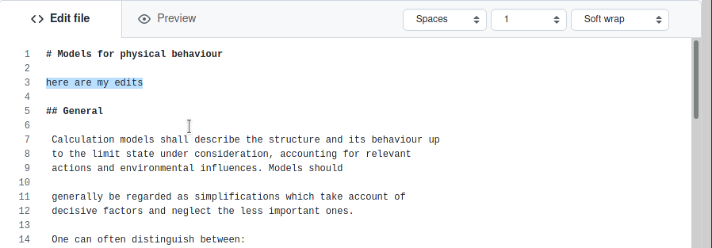
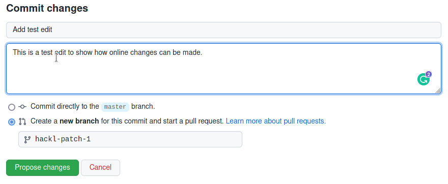
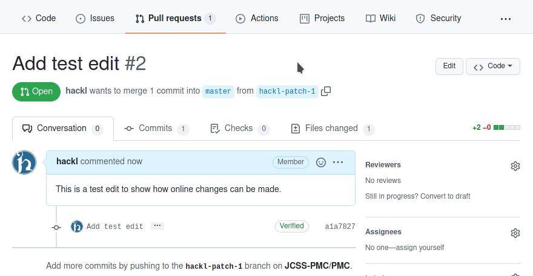
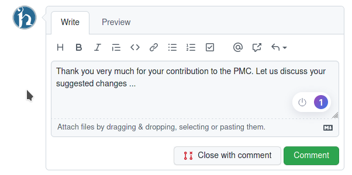
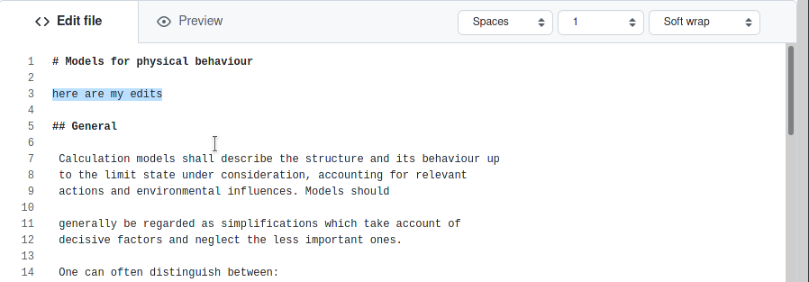
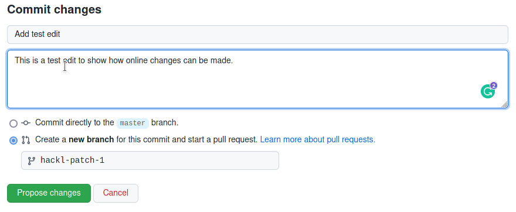
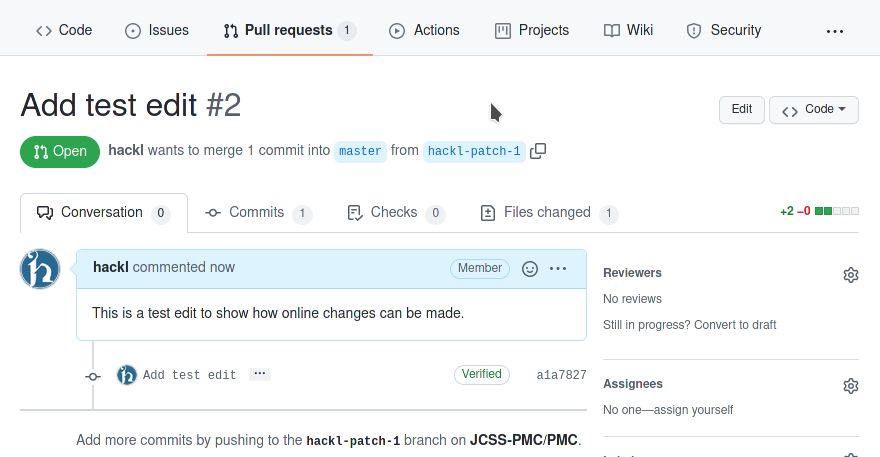
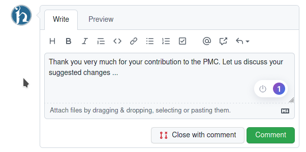

21. How to Use¶
This guide gives an overview of how to install jupyterbook locally on your computer (for advanced users) as well as how to edit the PMC directly online without needing a local installation (recommended option).
21.1. Local set-up¶
Warning
This setup is only recommended for advanced users who have basic knowledge of git, python and markdown.
21.1.1. Installation¶
This chapter gives an introduction how to set-up and use jupyterbook on your local machine. Jupyterbook uses python, hence you need a local python environment to install jupyterbook.
In your local python environment install the following packages:
pip install jupyter-book matplotlib numpy
21.1.2. Build command line interface¶
When you’ve written your book’s content, it is now time to build outputs for your book so that you may share them with others. For example, you may wish to build HTML files to host as a static website, or a PDF to share with colleagues.
he basic way to build your book is via the following command:
jupyter-book build <path-to-book>
For example if you in the book folder (i.e. where the _config.yml file is located) you shuld run:
jupyter-book build .
In the folder _build, you will find the created book.
21.2. Online set-up¶
Note
The PMC was designed in such a way that editing, moderation and publication of the content can be carried out online without local installations of the required programmes.
21.2.1. GitHub Account¶
To edit the PMC, you need a GitHub user account. If you don’t have such an account yet, go to github.com and click the sign up button. Please follow the instructions to create an account.
Important
During registration, you will be asked if you want to have a free or paid account. A free account is perfectly sufficient for editing the PMC!
After successful registration, you can use the functionalities of GitHub and edit the PMC online.
21.3. Online editing¶
21.3.1. First Steps¶
You also can edit the content of the PMC online, when you do not want to set-up jupyterbook on your local machine. Therefore a github account is needed (see XXX).
You have two options for online editing:
you can suggest changes to the text directly (
sugesst edits), oryou can start a discussion on specific topics (
open issue).
21.3.2. Sugesst Edits¶
If you want to suggest direct changes to the text, you can do so using the sugesst edits function. To do this, go to the corresponding page of the PMC and move the mouse over the  button. In the menu below, you can select option
button. In the menu below, you can select option sugesst edits. Click on this option.
{kind=link}
After that, an edit field opens in your browser where you can make the corresponding changes in the text directly. Jupyterbook uses Markdown as a simplified markup language for the text, i.e. the text is formatted using punctuation symbols (e.g. ** for bold -> **bold** = bold) and command sequences. An overview of the most essential formatting commands for the PMC can be found in section XXX. The formatted version of the text can be viewed under the Preview tab.
 







{kind=link}
{kind=link}
{kind=link}
{kind=link}